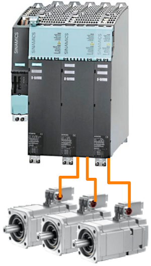
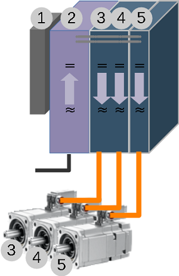

'Cam740' poate fi utilizat pentru diagnoza sistemelor Sinumerik 840D, Sinamics sau Simatic conectate prin Ethernet, Profibus, MPI sau alte interfețe permise de către sistemele Siemens Simatic S7.
Funcții 'Offline', fără o conexiune la un sistem PLC:
- Calculator biți alarme Sinumerik: calculează bitul din DB2 pentru un anumit număr de alarmă sau numărul alarmei corespunzătoare unui bit din DB2
- Calculator funcții M Sinumerik: calculează bitul din blocul DB specific canalului pentru decodificarea rapidă a unei funcții M
- Calculator IO Rapide Sinumerik: calculează bitul din DB10 pentru monitorizarea sau controlul unei intrări rapide NCK
- Ajutor pentru alarmele Sinamics: Afișează ajutor pentru o alarmă Sinamics funcție de numărul acesteia
Funcții 'Online', atunci când programul este conectat la un sistem PLC activ:
- Diagnoză axă / canal Sinumerik: un ecran cu informații în timp real referitoare la starea unora din cele mai importante semnale de permitere pentru diagnoza unei axe sau a unui canal
- Monitorizare alarme fabricant Sinumerik / modificare stare bit alarmă
- Jurnal și înregistrare funcții M Sinumerik
- Diagnoză a stării unei acționări Sinamics
Cam740 este bazat pe mai vechiul proiect 'Monitor5' ... Monitor5
Nu este necesara instalarea programului, acesta este portabil iar toate datele și setările sunt salvate în fișiere .INI în directorul propriu.
Pentru 'dezinstalare' este suficient să ștergeți întreg directorul în care ați salvat programul.
Download ...
Goto GitHub
 |
Sistem Țintă; Setări pentru conectare: | |
| Interfața: | opțiunile de selectare a interfeței de conectare sunt: | |
| - "TCP/IP": | Conexiunea poate fi de tip 'PG', 'OP' sau 'S7 Basic'. Nu ar trebui să existe diferențe în funcționare. | |
| - "S7ONLINE": | Conexiunea poate fi de tip 'MPI / PROFIBUS', 'TCP/IP' sau 'ISO Ethernet'. | |
| Adresă PLC: | setați aici adresa sistemului țintă (Step7-PLC sau Sinamics Drive) | |
| Rack: | Step7 rack CPU (de obicei Rack 0). | |
| Slot: | Step7 slot CPU. Valori uzuale sunt: Slot 0 pentru S7-1500 sau Slot 1 pentru S7-1500 în Sinumerik ONE sau Slot 2 pentru seria S7-300 | |

 |
Sistem Țintă; Setări conectare: | |
| X127: | (Interfață Service): Adresă: 192.168.215.1 | |
| X120: | (Rețea Sistem): Adresă: 192.168.214.1 | |
| X130: | (Rețea Compania): Adresă: setată de administratorul de rețea | |
| Sinumerik 840D: Rack 0, Slot 2 | ||
| Sinumerik ONE: Rack 0, Slot 1 | ||

 Notă: Când programul este conectat online la un sistem Sinumerik real, starea bitului (Alarmă SETATĂ sau Alarmă NE-SETATĂ) este afișată și poate fi modificată online cu butoanele 'Setare Bit' și 'Resetare bit'.
Notă: Când programul este conectat online la un sistem Sinumerik real, starea bitului (Alarmă SETATĂ sau Alarmă NE-SETATĂ) este afișată și poate fi modificată online cu butoanele 'Setare Bit' și 'Resetare bit'.
 Notă: Cu ajutorul funcției 'Monitor' (apăsarea butonului 'Monitor') starea bitului este monitorizată, reținută și afișată chiar dacă bitul este setat o perioada foarte scurtă de timp, de ex. un ciclu PLC. Pentru a reseta starea apasați din nou butonul 'Monitor'.
Notă: Cu ajutorul funcției 'Monitor' (apăsarea butonului 'Monitor') starea bitului este monitorizată, reținută și afișată chiar dacă bitul este setat o perioada foarte scurtă de timp, de ex. un ciclu PLC. Pentru a reseta starea apasați din nou butonul 'Monitor'.


 |
Sinamics G120: |
| Localizați interfața Profinet sau Profibus | |
| Este posibil să aveți nevoie de un alt software pentru a găsi adresa Ehernet / Profibus a modulului (Starter, StartDrive, TIA Portal, etc). | |
| Rack: 0 | |
| Slot: Oricare | |
 |
Sinamics S120: |
| Puteți utiliza X127 (Ethernet Service Interface) sau orice interfață Profibus / Profinet interface disponibilă | |
| Este posibil să aveți nevoie de un alt software pentru a găsi adresa Ehernet / Profibus a modulului (Starter, StartDrive, TIA Portal, etc). | |
| Rack: 0 | |
| Slot: Oricare | |
 |
Sinamics G120: |
| Pentru actionarile mono-axa (precum Sinamics G120, G120D, G120C, G120X, etc.) numarul obiectului nu este relevant. Unitatea de Control este montată pe modulul de forță (Power Module) și împreună formează un Obiect de Acționare: un sistem cu capabilitatea de a controla motorul, salva parametrii, a primi comenzi, etc. | |
|  | Sinamics S120: |
| Sistemele de acționări cu arhitectura modulară, precum Sinamics S120, au o arhitectură complexă. Diversele componente sunt conectate între ele, prin intermediul barelor de Curent Continuu și prin intermediul interfeței de sistem Drive-Cliq, pentru a controla unul sau mai multe motoare. În acest mod, motorul nu mai este controlat de un singur echipament hardware, ca în cazul sistemelor mono-drive ('Single Drive'), pentru a controla motorul sunt necesare mai multe componente conectate între ele. | |
| Exemplu: În imaginea din stânga este reprezentat un sistem modular ce controlează 3 motoare. - primul modul (cel mic, din stânga) este Unitatea de Control (Control Unit) - al 2-lea modul este Modulul de Linie (Line Module): un redresor ce transformă curentul alternativ de la rețea în curent continuu. - al 3-lea modul este un Modul Dublu de Motor (Double Motor Module): două convertizoare ce modulează curentul continuu venit pe barele circuitului intermediar de la modulul redresor (Line Module) în curent alternativ pentru controlul motoarelor. - al 4-lea modul este un Modul pentru un Motor (Single Motor Module): un convertizor ce modulează curentul continuu venit pe barele circuitului intermediar de la modulul redresor (Line Module) în curent alternativ pentru controlul motorului. | |
|  | (1) In sistemele Sinamics S120, Unitatea de Control (Control Unit) este considerata un Obiect de Actionare (Drive Object). In exemplul nostru va fi primul Obiect. |
| (2) Intr-un sistem modular este nevoie de un modul redresor. Unele redresoare, precum "Active Line Module" au parametri si sunt considerate Obiecte de Actionari in sistem. In exemplul nostru modulul Active Line Module (redresorul) este al 2-lea Obiect. | |
| (3) si (4) Un modul de motor dublu (Double Motor Module) are doua punti invertoare independente, fiecare capabila sa controleze tensiunea de curent alternativ pentru un motor. Fiecare invertor are proprii parametri si, impreuna cu motorul si electronica necesara pentru encoder (de exemplu un Sensor Module) formeaza cate un Obiect de Actionari. In exemplul nostru, Obiectul (3) este format din primul invertor al Modulului Duble, primul motor si eventual electronica necesara pentru encoder. Obiectul (4) este format din al doilea invertor al Modulului Dublu, al doilea motor si eventual electronica necesara pentru encoder. | |
| (5) Obiectul de Actionari (5) este format din ultimul Modul de Motor, ultimul motor si eventual electronica necesara pentru encoder. |
Versiuni:
v23.06.24: Versiune de test. Rescriere completă a proiectului Monitor5.
Cam740 utilizează Snap7 sub Licență LGPL3 pentru a stabili comunicatia cu echipamentul Sinumerik/Sinamics/Step7.
Cam740 utilizează Qt sub Licență LGPL3.